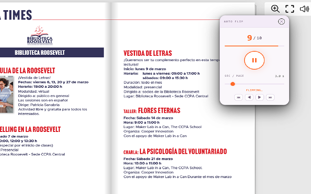

Flipbook Auto Flip
Automatically flip through any online flipbook, hands-free 📖. With Flipbook Auto Flip, a draggable floating widget appears directly on the page — just set the speed and press Play. The extension handles the rest, turning pages one by one until the last page is reached.
No complicated setup, no manual clicking. Once activated from the toolbar icon, a compact control panel appears over the flipbook — you can drag it anywhere on screen so it never gets in the way. Set how many seconds to wait between pages, press the play button, and watch the pages turn automatically.
The widget is built with Shadow DOM isolation 🎯, meaning its styles are completely separate from the flipbook's own CSS — no visual interference, no broken layouts, no conflicts. It works cleanly on top of any page.
Universal compatibility is achieved through multiple page-turning strategies. The extension first detects Turn.js flipbooks (including .magazine and #flipbook elements) and uses the native API directly. For all other platforms it falls back to clicking the next-page button, or sending an arrow key — so it works on virtually any flipbook engine on the web.
Smart end detection automatically stops flipping when the last page is reached — either by reading the page counter or by detecting that the page has stopped changing. No need to babysit the browser.
📋 How to Use
- ⬇️ Install from Chrome Web Store
- Navigate to any flipbook page.
- Click the extension icon in the toolbar — a floating widget appears on the page.
- Drag the widget to a convenient position if needed.
- Use the slider to set the number of seconds between page flips.
- Press the ▶ Play button to start automatic flipping.
- Press the ⏸ Stop button at any time to pause.
- Click ✕ to close the widget.
📷 Screenshots


✨ Key Features
- Draggable Floating Widget — Stays on the page and can be moved anywhere with drag-and-drop
- Shadow DOM Isolation — Widget styles are fully isolated from the host page — zero visual conflicts
- Turn.js Native API Support — Directly controls Turn.js flipbooks via
.turn('next')for reliable, smooth page turns - Universal Fallback — Clicks the next-page button or sends ArrowRight key on any other flipbook platform
- Adjustable Speed — Slider from 1 to 20 seconds per page, saved automatically between sessions
- Live Page Counter — Displays current page and total pages in real time
- Progress Bar — Visual progress indicator shows how far through the flipbook you are
- Smart End Detection — Stops automatically when the last page is reached or the page stops changing
- Toggle with Toolbar Icon — Click the icon to show/hide the widget at any time
- Clean Minimal Design — Dark-themed compact widget that stays out of the way
🎯 Perfect For
- Digital magazines and catalogs on flipbook platforms
- Presentations and brochures in Turn.js or similar viewers
- Auto-playing flipbooks at kiosks or trade show screens
- Previewing long flipbooks without manual clicking
- Accessibility — hands-free reading for users with mobility needs
- Recording screen demos or walkthroughs of flipbook content
- Any webpage using Turn.js, FlippingBook, Heyzine, or similar engines
⚙️ Compatible Platforms
- Turn.js flipbooks (
.magazine,#flipbook,.flipbook) - FlippingBook
- Heyzine
- FlipbookPDF
- Issuu
- Calameo
- Yumpu
- 3DFlipBook
- FlipHTML5
- Any flipbook with a "next page" button or arrow key navigation
💡 Tips for Best Results
- Increase the interval to 3–5 seconds if page animations are slow or the flipbook loads images lazily
- Drag the widget to a corner so it doesn't overlap important content
- Close any overlays or popups on the flipbook before pressing Play
- Navigate to the first page manually before starting if you want to flip from the beginning
- The widget remembers your speed setting between browser sessions — no need to reconfigure
🔒 Privacy & Security
- Works entirely in your browser — no data sent to external servers
- Only requests
activeTabandscriptingpermissions — nothing more - No account required
- No data collection, analytics, or tracking
With Flipbook Auto Flip, browsing any online flipbook becomes effortless. Whether you're reading a digital magazine, presenting a catalog, or simply don't want to keep clicking — just drop the widget on the page, set your speed, and let it flip. 📖
⬇️ Download from Chrome Web Store